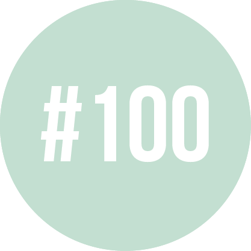

"Great stories happen to those who can tell them" - Ira Glass
Hi, my name is Ji-hern Baek. I am currently studying at the University of California, Berkeley, as a 4th year Cognitive Science Major and Computer Science Minor. I am passionate about design, technology, and people; and I work to find the balance between those three.
Accordingly, I am an aspiring UI/UX designer; I believe such a career allows me to work at the crossing paths between design, technological development and integration, and human growth.
Aside from design work, I enjoy being involved in a variety of communities. I recently served as the President of Cal's Korean American Student Association. Additionally, I currently serve as the Chief of Staff for a university senator, reside as an appointed member of Cal's Mental Health Wellness Committee, and am involved in Berkeley Innovation and Innovative Design - two of Cal's design organizations.
I also enjoy hiking and singing (check out the a cappella group I was a part of)!
contact // jgbaek@berkeley.edu
